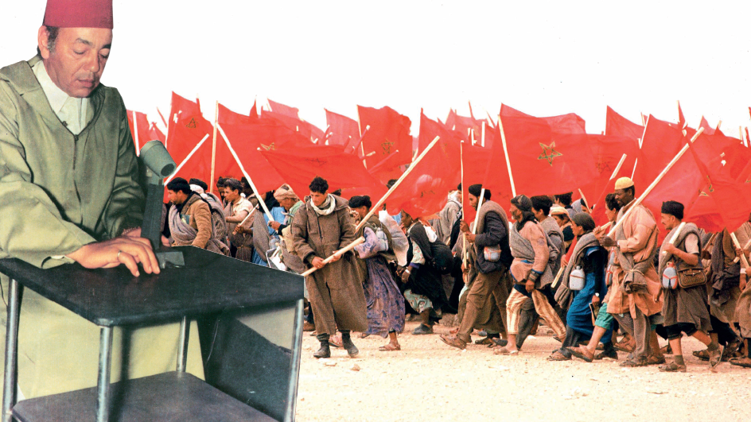
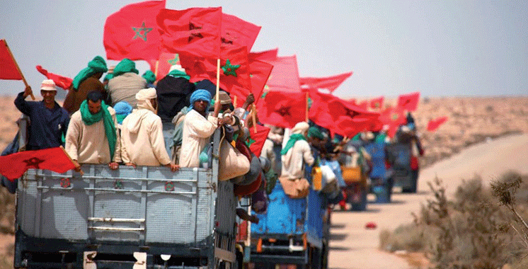

Commémoration de la Marche Verte: Une célébration marquante animée par le Club Patrimoine:
Le 6 novembre 1975 marque un tournant décisif dans l'histoire du Maroc. Ce jour-là, le peuple marocain, uni par un souffle d’espoir et de justice, s'est levé pour revendiquer son droit légitime sur le Sahara marocain. Cet esprit de solidarité et de patriotisme a été ravivé récemment à l’occasion du 49ᵉ anniversaire de la Marche Verte. Les élèves du Club Patrimoine du Lycée d'Excellence de Rabat, ont organisé une cérémonie culturelle et artistique riche en émotions et en créativité pour rendre hommage à cet événement historique.
Ce jour-là, le Maroc tout entier s'est levé, porté par un souffle d'espoir et de justice. Hommes et femmes, jeunes et adultes, unis dans une même ferveur, ont marché d'un pas déterminé vers leur histoire, pour réclamer leur droit légitime sur Sahara marocain. Les festivités ont débuté dans une ambiance solennelle avec le chant de l’hymne national, un moment empreint de fierté. Les élèves et les enseignants, rassemblés dans un esprit de recueillement, ont chanté avec ferveur en tenant le drapeau national. Ensuite, la récitation de quelques versets coraniques a apporté une émotion spirituelle, rappelant les valeurs de foi et d’unité. Cela a été suivi par la projection d’une vidéo retraçant le discours historique royal et l’événement de la Marche Verte. Un hommage émouvant a également été rendu à Feu Sa Majesté le Roi Hassan II, dont les paroles ont été lues avec émotion. Ces mots, porteurs de courage et d’unité, ont résonné dans les cœurs des élèves et des enseignants, rappelant la sagesse inégalée du défunt Roi.
Le programme s’est enrichi d’un dialogue multilingue, où les élèves, avec une éloquence remarquable, ont échangé en amazighe, arabe, français et anglais. Ce moment a incarné l’unité dans la diversité, reflétant l’âme d’un Maroc pluriel et solidaire entre les différentes cultures qui composent l’identité marocaine. Les talents artistiques des élèves se sont ensuite révélés à travers l’interprétation émouvante de la chanson patriotique "صوت الحسن ينادي", une véritable ode à l’histoire marocaine. Cette mélodie, plus qu’un simple chant, est un appel vibrant, une promesse d’espoir gravée dans la mémoire collective.
À cette occasion, un échange interactif en arabe et français sur la Marche Verte a permis de renforcer les connaissances des élèves sur l’histoire de leur pays et d’améliorer leur culture générale. Parmi les activités mémorables figurait également un sketch présenté en arabe par des élèves talentueux, insistant sur les valeurs nationales, l’héritage culturel, la solidarité et le respect. En parallèle, pour célébrer la diversité et la richesse culturelle du Maroc, un sketch en amazigh a été interprété, mettant en lumière les sacrifices des ancêtres pour libérer notre Sahara et soutenir la souveraineté du Maroc.
La commémoration s’est poursuivie par la chanson "العيون عينيا", qui a suscité une vague d’émotions et de fierté patriotique. Une autre chanson intitulée "Morocco" a valorisé l’identité nationale et le respect des symboles nationaux, plongeant les invités dans l’atmosphère de cette époque et reflétant l’attachement des Marocains à leur patrimoine. La prestation de l’élève talentueuse Douae Moussafir, qui a interprété cette chanson en anglais avec une voix mélodieuse et fascinante, a captivé l’ensemble du public.
Un poème en arabe, récité par la brillante élève Maroua Bouherra avec une élégance et une harmonie exceptionnelle, a également marqué les esprits. Par ses émotions profondes, elle a su transformer les mots en une véritable source d’inspiration et de motivation, laissant une empreinte inoubliable sur l’événement.
Pour clôturer cette cérémonie riche en émotions, un moment symbolique a permis aux élèves et aux spectateurs d’apposer leurs empreintes sur une grande affiche aux couleurs du drapeau national, incarnant l’esprit d’amitié et de solidarité. Chacun a également signé une seconde affiche pour immortaliser ce souvenir unique. Un atelier de création artistique a invité des volontaires à imaginer et dessiner des œuvres reflétant l’esprit de la Marche Verte. Les résultats, très impressionnants, ont exprimé la vision unique de chaque groupe.
Enfin, l’événement s’est terminé autour d’une cérémonie de thé et d’un gâteau décoré aux couleurs du drapeau marocain. Ce moment convivial a reflété les traditions marocaines tout en symbolisant l’unité et l’amour envers la patrie. Grâce à l’implication des élèves du Club Patrimoine cette commémoration restera gravée dans les mémoires comme un moment de fierté, de solidarité et de célébration des valeurs patriotiques du peuple marocain
- Aya Daouf (Rédaction)
- Yousra Ramli (Rédaction)
- Aya Jallouli (Rédaction)
- Rihabe Ait Ouarrim (Photographie/Les photos)
- Ahmed Bouramdane (Développement et UI/UX)